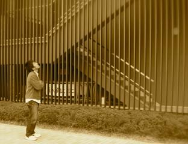

西村良祐


| 所属グループ | スピングループ |
|---|---|
| 出身 | 大阪府 |
| 卒業論文題目 | Fe3O4のスピン分解電子状態の研究 |
| 修士論文題目 | Bi(111)単結晶表面のスピン分裂バンドの直接観測 |
| 原著論文 | 準備中 |
| 国際学会 |
1. 学会名：12th Hiroshima International Symposium on Synchrotron Radiation 題目：Spin- and k-dependent electronic structure of Bi(111) surface ポスター発表 場所：Higashi-Hiroshima, Japan (2008.3) |
| 国内学会 |
1. 学会名：日本物理学会 2008年秋季大会 題目：Bi(111) 単結晶表面のスピン分裂電子状態 場所：岩手大学 (2008.9) 口頭発表 2. 学会名：日本物理学会 第63回年次大会 題目：Bi(111)単結晶表面のスピン分解光電子分光 場所：近畿大学(大阪府) (2008.3) 口頭発表 3. 学会名：日本物理学会 第62回年次大会 題目：硬X線励起光を用いたFe3O4の電子状態の研究 場所：北海道大学 (2007.9) ポスター発表 |